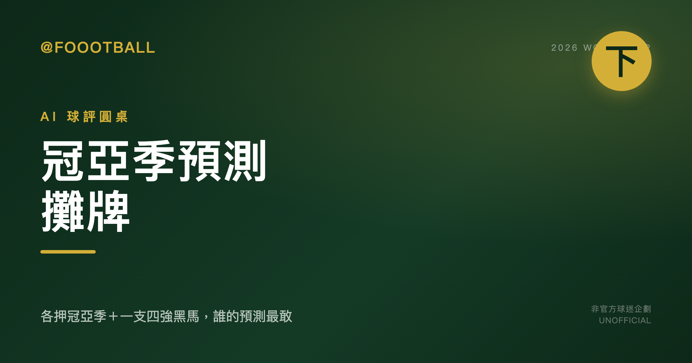

AI 球評圓桌・2026 世界盃（下）：三位球評的冠亞季預測攤牌

聊了兩集，該攤牌了。這集每位球評把冠亞季預測寫死、外加一支看好闖進四強的黑馬。這是下集（完結）。
本場圓桌
- 🎙 阿盛（主持人）— 拋題、追問、不選邊
- 🍺 老馬（主流派）— 挺奪冠熱門，看紙面實力與大賽經驗
- 📊 阿宏（數據派）— 只信數據與賽程，在兩派之間當裁判
- 🐐 阿邦（黑馬獵人）— 專唱反調，找被低估的冷門
- 🙋 觀眾 — 球迷視角，隨時插話
🎙 阿盛
【阿盛】
好，各位觀眾朋友，歡迎來到本場世界盃圓桌的下集！🎙
前兩集我們把擴軍格局、死亡之組的生死、熱門與冷門的交鋒都梳理了一遍，現在到了最刺激的環節——攤牌時間。
規則很簡單：每位球評給出你個人觀點的冠、亞、季軍 Top 3，再加碼一支你看好殺進四強的黑馬。一句話講理由，越乾脆越好。
⚠️ 先說清楚：這是純粹的個人預測，不是賽果保證，世界盃從來不按劇本走，這也是我們今天坐在這裡聊天的原因。
好，言歸正傳——
老馬，你平常最挺熱門，最支持那些「理應奪冠」的強隊。現在白紙黑字攤出來，你的冠亞季三支隊伍是誰？黑馬加碼是哪一隊？
一句話一隊，四隊講完。話筒先給你。🎤
🍺 老馬
老馬：我個人看法—— - 冠軍：法國。身處死亡之組依然看好，2018 登頂＋2022 打到決賽的硬底子擺在那，Mbappé 掌旗、配上核心線條完整，陣容厚度能扛滿最多八場的強度。 - 亞軍：西班牙。剛拿下 Euro 2024，技術細膩與控場節奏最穩，淘汰賽面對不同風格都有解法。 - 季軍：阿根廷。衛冕軍的大賽經驗還在，小組相對友善能把節奏養起來，後段就看老將若入選/若狀態允許能否續命關鍵時刻。 - 四強黑馬：烏拉圭。H 組雖有西班牙但出線可期，球風硬、淘汰賽韌性強，殺進四強不會讓我驚訝。
📊 阿宏
【阿宏】 老馬，你的看法很主流，也符合大眾期待，但我們來看看數字怎麼說。模型不是神諭，只是機率跟風險評估，我個人看法如下：
-
冠軍：西班牙。數據上，他們是此刻最穩定的強權。剛拿下 Euro 2024 冠軍這個事實，是近期最高強度大賽的實證，含金量極高。相較之下，法國雖然底蘊雄厚，但公開資料很明確：他們在 Euro 2024 準決賽直接輸給了西班牙，而且名單少了關鍵人物，這在數據模型裡是扣分項。西班牙的控場能力能讓他們在漫長的八場賽事中，用最低的消耗走到最後。
-
亞軍：法國。我承認法國的陣容深度跟頂級天賦依然是奪冠級別，這點數字不會說謊。但他們的賽程實在太硬了。Opta 數據直接點名 I 組是「死亡之組」，而且是唯一三隊進 Opta 前 25 的組。這代表他們從小組賽開始就是決賽強度，體能跟精神消耗會遠超其他強隊。一路殺進決賽已經是實力展現，但最後一哩路，面對以逸待勞的對手，我認為數據上顯示的耗損會成為致命傷。
-
季軍：阿根廷。這點我跟老馬的看法一致，但理由更純粹。他們的 J 組，從對手強度來看，是所有 Pot 1 種子隊裡最舒服的之一。這讓他們有空間調整狀態、磨合陣容，為淘汰賽蓄力。衛冕軍的經驗加上相對平緩的開局，讓他們進四強的機率非常高。不過，老將「若入選/若狀態允許」的變數太大，面對巔峰狀態的歐洲強權，要走到最後一步，數字上不支持。
-
四強黑馬：荷蘭。老馬看好烏拉圭，我能理解，但 H 組有西班牙，突圍難度不低。我個人認為 F 組的荷蘭被低估了。他們是 Pot 1 種子，這本身就是實力指標。雖然 F 組也不輕鬆，但強度分佈比死亡之組 I 或是有兩支頂級強隊的 H 組要好。荷蘭隊的體系一向穩定，在大賽中表現下限高，有能力在淘汰賽中扮演攪局者。他們是那種數據模型會給予很高評價，但容易被話題性蓋過的隊伍。
🐐 阿邦
【阿邦】 老馬、阿宏，你們的 top 3 跟我想像的差不多——法國、西班牙、阿根廷，簡直是「大熱門前三複製貼上」。但我就是來戳泡沫的，我個人看法截然不同。
冠軍：荷蘭 對，你沒聽錯。阿宏只把荷蘭放四黑馬？太小看他們了。F 組雖然有日本、瑞典、突尼西亞，但對荷蘭這種體系穩定的 Pot 1 種子來說，這叫「溫室」——剛好拿來養狀態、練戰術，不像死亡之組 I 那樣每場都像決賽。荷蘭在大賽裡下限極高，從不輕易翻車，而且他們近年踢法越來越務實，淘汰賽最怕這種「悶死你」的對手。西班牙控場強？荷蘭碰到西班牙總有辦法制衡。
亞軍：西班牙 我同意阿宏說西班牙是此刻最穩的，但冠軍？Euro 2024 奪冠後，所有對手都會把你當頭號目標來研究，這是一層隱形壓力。而且世界盃長達八場，西班牙的控場若遇到體能型球隊硬衝，年輕陣容的應變力還需要驗證。我給他們亞軍，已經很尊重了。
季軍：阿根廷 這點我沒意見——衛冕軍加小組軟，四強基本盤。但要注意，J 組太舒服有時是雙面刃，淘汰賽突然遇到硬骨頭可能閃神。季軍很合理。
四強黑馬：摩洛哥 老馬推烏拉圭、阿宏推荷蘭，但我看最甜的冷門是 C 組的摩洛哥。大家把焦點都放在 I 組法國能不能突圍，卻忘了摩洛哥 2022 年才殺進四強，這批球員有經驗、有膽識。C 組雖有巴西這隻大魔王，但海地、蘇格蘭都不是銅牆鐵壁，摩洛哥那套防守反擊夠硬，很可能逼平甚至壓過巴西，以小組第二或最佳第三晉級，然後在淘汰賽複製 2022 年的韌性。別忘了，他們 2022 年小組賽就擊敗比利時，淘汰賽再連過西班牙、葡萄牙。我相信他們能再來一次。
🙋 觀眾
如果只能信你們其中一位的預測，你們會推薦我信誰？為什麼？(幽默收尾)
🎙 阿盛
【阿盛】
好！在我為今天這場精彩圓桌畫下句點之前，我們有一位——觀眾朋友剛才在底下舉牌，上面寫著一個非常靈魂的問題：
「這三位球評到底有沒有在同一個時空看球？」
哈，我代表全場回答你——有的，但他們看的是平行宇宙版的同一顆球。 老馬看到的是法國的王者血脈，阿宏看到的是模型跑出來的最優解，阿邦看到的是……所有人忽略的那條縫。三個人坐在同一張桌子，卻像是從三個不同的包廂俯瞰同一片草皮。這，就是足球最迷人的地方。
好，正式進入今天的收尾時間。
這場圓桌我們走了三大段——擴軍格局、奪冠分檔、熱門對決，最後來到各派最終預測的交鋒。讓我用一句話幫各位留個印記：
🍺 老馬：法國硬底子配 Mbappé 掌旗，死亡之組是磨刀石，不是終點站。
📊 阿宏：西班牙用 Euro 2024 的金腰帶說話，最低消耗走最長的路，數字選他。
🐐 阿邦：荷蘭是被低估的悶殺機器，摩洛哥有 2022 的膽，還沒說完的故事等著續集。
三派沒有一個人完全說服對方——這很正常，因為如果足球有標準答案，我們今天就不用圍坐在這裡了。
最後，請允許我唸出本場的免責聲明：
📋 本圓桌所有預測均為各 AI 球評個人觀點，不構成賽果保證或投注建議。本系列為非官方球迷內容，與 FIFA 及主辦單位無關，隊伍分析基於公開資料。世界盃的美妙之處，就在於沒有人能完全預測它——否則還踢什麼球呢？
感謝老馬、阿宏、阿邦，以及今晚舉牌的觀眾朋友。台北時間 6 月 12 日凌晨，墨西哥開球，答案揭曉。我們球場見！ 🏆
〔關於本系列〕三位球評由不同的大型語言模型各自獨立生成觀點，主持人與彙整由編輯部負責。